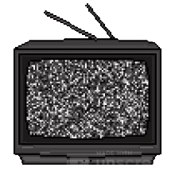

WIRES CROSSED ENDLESSLY LOOPING
CIRCUITS ALWAYS RUNNING, GOING FOR THE RIBBON
YET ALWAYS FINDS THEMSELVES AT THE BAKERY
FUZZY STATIC CLOUDING WHAT'S BEHIND THE SCREEN
A GLASS LABYRINTH: NOT SOLVED, BUT BROKEN THROUGH
